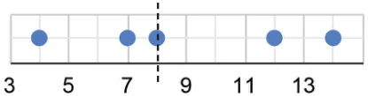
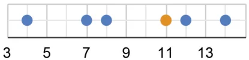
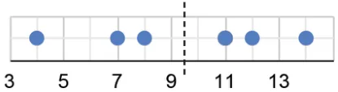

We know that the median is the middle value in the sorted data - there are an equal number of values less than it and greater than it. Will including a new value to the data increase or decrease the median? Let us consider the following data. The median of this data is 8.

Median \(= 8\)


Median \(= 9.5\)

Suppose we include a value 11. The new value included is greater than the (earlier) median - the median can no longer be 8 as there are more values greater than it. Therefore, the median will also increase. The median, now, will be the average of the two middle values 8 and 11, which is 9.5. We can similarly argue that when a value less than the median is included, the median will decrease.